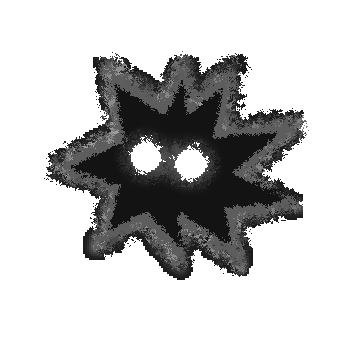

Hello, I'm
JustPuffer
Game Developer & Security Enthusiast

About Me
I'm an aspiring developer from the Czech Republic, primarily focused on game development with a growing interest in cybersecurity. I work with C C# GML HTML CSS JavaScript TypeScript Python
I started with game development when I was 12 years old, and it has kept me hooked ever since. I mainly use GameMaker because of its simplicity, which is what allowed me to get started at such a young age. Games have fascinated me from the very beginning — I realized that creating games is far more fulfilling than playing them.
Beyond game development, I'm exploring cybersecurity and continuously learning new programming skills to expand my toolkit.
Featured Projects
ERROR: COLOR DETECTED
You wake up in a strange testing facility where everything is black and white. The walls, the floor, the rooms, all of it looks drained and lifeless. Then you notice something weird. You are leaking color. Every step leaves a bright streak behind you. The place reacts to it, like the color is not supposed to be here. Your goal is simple. Solve puzzles.
Made with RAFION Studios — a team of three 15-year-old friends who poured time, energy, and late nights into this project.
Past tense
A game about a ghost of an ancient alchemist on a quest to assemble the shattered Orb of Reincarnation.